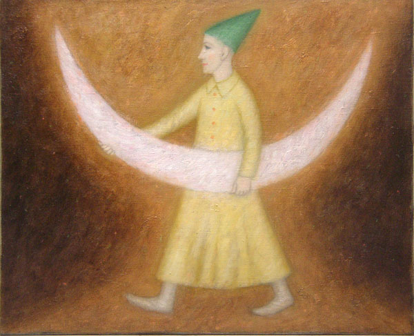
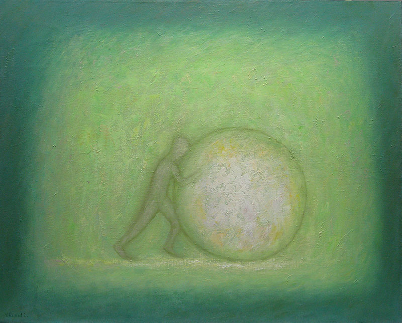
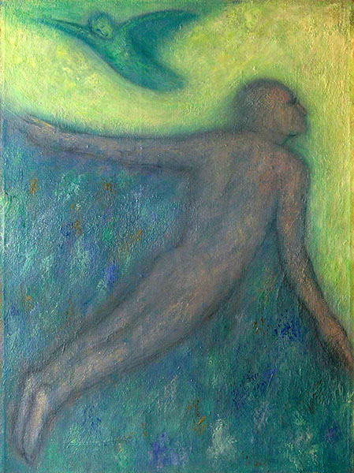

СВЕТИЧЕСКИЕ ЗНАКИ
Многие композиции Григория Иванова возвращают живопись к временам утра искусства, или детства человечества: это контурные рисунки на скалах, стенах пещер, домов, храмов и т.д. И по сей день так называемые примитивные народы украшают изделия своих рук плоскостно-линейными орнаментами и изображениями. В наше время всякий ребенок, начиная рисовать, покрывает бумагу, или стены, или асфальт во дворе контурными фигурами. Он не стремится создавать иллюзии объемов или пространства.
В самом деле: чтобы вызвать у человека представление о предмете, достаточно изобразить его контур, притом в самых общих чертах, без подробностей.
В ХХ веке художники-модернисты возвращаются к этому первобытному, или «детскому» примитивизму: Х. Миро, П. Клее, П. Пикассо, А. Матисс ...На контурном рисунке основано искусство знаков, шрифтов, каллиграфии.
Если художник отказывается от изображения натуры со всеми подробностями (полагая, что эту задачу берёт на себя фотография, или по другим причинам), то у него остаётся два пути: упрощать рисунок до контурного (линейного) и плоскостного, или оперировать геометрическими формами. (Как вариант может быть абстрактное изображение мелкомасштабных структур).
В начале своего творческого пути Григорий Иванов пользуется традиционной техникой реалистической живописи — объем, пространство, светотень.
На втором этапе восхождения по пути «к самому себе» Художник выражает свою мысль средствами плоскостного и линейного рисунка, а также свето-воздушного колорита. Работы этого периода были показаны на выставке 1 февраля 2011 года, так же, как и работы третьего этапа , в которых остаётся единственный объект — сияющий свет.
Рассмотрим несколько работ из серии «Светические знаки».
Они как будто начертаны огненным перстом на стене пиршественного зала, как на Валтасаровом пиру.
Светические знаки 2
Белый зигзаг
Что значат эти слова? — Никогда мы этого не узнаем. Разве что явится пророк Даниил и прочтет. Впрочем, сказано: «Иди, Даниил; ибо сокрыты и запечатаны слова сии до последнего времени» (Дан.12:9).
В контурных рисунках Григория Иванова сочетаются два сильных фактора: обаяние «искусства дикарей» и впечатляющий колорит. На мой взгляд, эти картины очень современны (в лучшем смысле этого слова).

Ангел дома
Знаки
ХАОС
- И хаос опять выползает на свет
- Как во времена ископаемых
- Б. Пастернак
- Как во времена ископаемых
Хаос — это конгломерат множества разнородных элементов, расположенных в пространстве случайно по отношению друг к другу (самое простое определение).
В нашей культуре слово «хаос» стало синонимом беспорядка, беззакония, безумия, поскольку наша человеческая деятельность предпочитает всё упорядоченное, выстроенное по закону, объяснимое разумом — иначе говоря, «структуру», или «порядок».
Между тем, сам наш мир и космос возникли из хаоса. Это знали древние люди. Публий Овидий Назон так описывает начало сотворения мира:
Не было моря, земли и над всем распростертого неба, —
Лик был природы един на всей широте мирозданья, —
Хаосом звали его. Нечлененной и грубой громадой,
Бременем косным он был, — и только, — где собраны были
Связанных слабо вещей семена разносущные вкупе.
...Воздух был света лишен, и форм ничто не хранило.
Всё ещё было в борьбе, затем что в массе единой
Холод сражался с теплом, сражалась с влажностью сухость
Битву с весомым вело невесомое, твердое с мягким.
Бог и природы почин раздору конец положили. (Овидий. «Метаморфозы»)
В человеческой деятельности, в том числе искусстве и философии категории «хаос» и «порядок» — две противоположные тенденции, ведущие между собой постоянную борьбу.
Романтические стили и направления предпочитают свободу, натуральность форм, подвижность, непредсказуемость хаоса; классические выбирают закономерность, статичность, конструктивность порядка и «космоса».
Идеолог романтизма обосновывает неистребимость хаоса в душе человека и в искусстве: «Хаос — основное содержание возвышенного, ...символ бесконечного и абсолютного» ...Ф.В.Й. Шеллинг противопоставляет «Возвышенное» и «Прекрасное»; соответственно этому противостоят друг другу «Романтическое» и «Классическое». Философ отдает явное предпочтение романтическому с его склонностью к хаосу.
Впрочем, все эти деления и классификации отображают только общие тенденции в жизни и искусстве. В работе отдельного художника они могут вступать в сложные взаимоотношения, — и не только борьбы, но и взаимодействия.
Григорий Иванов в своих картинах-сказках соблюдает все классические нормы и правила композиции, и вдруг — «Древний хаос, как встарь, Вкрался в душу томленьем неясным»... (А. Белый)
- Душа запросила свободы — полной свободы,
- кисть пошла гулять по холсту в своё удовольствие,
- красочные ленты — синие, желтые, белые, черные, серые, розовые,
- плавающие в бездонном сером тумане,
- сплетаются, пересекаются, погружаются и выплывают.
- Здесь перемешаны семена разных форм: листьев, трав, крестов, букв, лиц...
- кисть пошла гулять по холсту в своё удовольствие,
Хочется разобрать все эти начатки форм, разложить их по отдельности.
На белом фоне... Длительное созерцание хаоса возбуждает желание порядка, — и наоборот. Такова диалектика жизни.
Хаос
ЧЕЛОВЕК
- Многие говорят: кто покажет нам благо?
- Яви нам свет лица Твоего, Господи! (Пс.4:7)
Человек на картинах Григория Иванова — это знак, или тень, или его духовная эманация. В нем нет плоти, ничего нет от современного человека. Это
ангел, бесплотный и бесполый,
он похож на сказочного гнома в колпаке,
или на юродивого шута (он же — мудрец и пророк).
На картинах — не разные люди, а всё один и тот же: духовная ипостась
создавшего их Художника.
Если верно, что всякий художник выражает и портретирует самого себя, то по отношению к Григорию Иванову это трижды верно. В своей фигуративной живописи он прост, как дитя: объемные тела переданы контуром, почти плоскостно раскрашены, (притом игнорируют каноны гармонических сочетаний). Никаких анатомических признаков строения человека, никакой заботы о правдоподобности в одежде, в позе, в антураже (его вообще нет). Это — детская прямота выражения мысли минимальными средствами и без излишеств.
Иллюстрации к сказке — вот первое впечатление от картин, где присутствует человек или животные. Но сквозь эту простоту можно рассмотреть глубинный слой смыслов — символику сюжетов, предметов и композиции.
Здесь человек — не «мыслящий тростник», и не «двуногое существо без перьев». Он, по существу, ангел, насельник Неба. Или Адам до грехопадения. Он райский человек — невинный и беззлобный, он еще не познал Добра и Зла, но уже знает всё — сам Творец вложил в него свет знания.
Этот свет излучают его голубые глаза, его белые, голубые, розовые одежды; он несет в мир яркие сгустки света на своём посохе, возвещает о пришествии Света звоном колоколов.

Несущий свет
Он катит куда-то огромный шар Истины, не видя пути, не останавливаясь и не рассуждая, в зеленоватом тумане. Вряд ли по силам ему постичь Истину разумом, но он ощущает её верой.
Иными словами, Человек здесь — не сочетание зверя с ангелом, а просто «светический человек».

Шар Истины
Он — путник.
Его работа — идти и светить.
Мой домик
Человек любит свой дом, помнит его постоянно,
ласково прижимается к нему, как к родному существу.
Он, такой добрый и немножко смешной,
неспособен оставить дом по примеру апостолов Петра и Андрея.
Приверженность его к дому — маленькая и простительная слабость,
роднящая его с человечеством.
Здесь мы видим Человека на фоне его родного дома и в кругу семьи: жена, ребенок, мать ...Картина напоминает произведения модернистов ХХ века, и в то же время — детский рисунок. Семья — вечная тема в искусстве; в интерпретации ребенка (и Григория Иванова) она особенно трогательна.
А вот совсем уж фантастический и зловещий образ человека, хотя и напоминающий наскальную живопись эпохи неолита, но более сходный по стилю с искусством модернизма.
У этого белого полупрозрачного «человека» уже нет благодушия и веры, нет света надежды. Он терзаем злобными силами, страстями, сомнениями; он почти уже не существует (в отличие от животных).
Не знаю, как вас, а меня эта картина заставляет усомниться в вечности бытия человечества.
Возвращение блудного сына
Григорий Иванов не всегда был инфантилен на своем творческом пути.
В его коллекции есть вещи совершенно серьёзные и по форме, и по содержанию. Например, сюжет из евангельской притчи о блудном сыне. Художник не подражает Рембрандту, но дает более обобщенную трактовку сюжета, узнаваемого во все времена.
Сцена погружена во мрак, здесь нет «светизмов».
Но зритель, желающий увидеть в искусстве отображение жизни с её неизбежными драматическими коллизиями, надолго остановится перед этой картиной.

The Ascension
— душа, взлетающая без крыльев.
Даже падший человек, побывавший, может быть, в аду, — обнаженный, бескрылый, ещё может взлететь, потому что божественное начало в нем неуничтожимо.
ДОМ
- Мудрые удаляются: дома для них нет наслаждения.
- Как лебеди, оставившие свой пруд, покидают они свои жилища.
- Их путь, как у птиц в небе, труден для понимания.
- (Дхаммапада VII, 91,92)
- Как лебеди, оставившие свой пруд, покидают они свои жилища.
Думаю, что ключевой картиной к теме «Дом» может послужить романтическая идиллия «Светлый день», где прекрасный юноша любовно обнимает белый домик. Душа его при этом расцветает, как ромашка и возносится к небу, как воздушный шар.
Светлый день
Аналогичный сюжет —
Возвращение
Иногда дом едет на осле или висит за спиной путешественника, иногда покоится в объятиях человека.
В пути как дома
Путешественник
Сам Художник, конечно, осознаёт сентиментальность этих сцен и, как видим, относится к ним с мягким юмором.
Домашняя идиллия
На пути Человека встречаются старинные храмы. Путник отдает им дань молитвенного преклонения, хотя по видимости выше их.
Старый дом
Иной раз дом принимает форму башни. Конечно, в ней сидит принцесса.
Она смотрит в окно, и человек в зеленом пальто и голубом колпаке преподносит ей красный цветок. Путник не может обнять принцессу, так как они несоизмеримы; вместо этого он обнимает башню — несокрушимую оболочку своей возлюбленной.

Привал у белой башни
Маленький домик
В этой картине фантазия Григория Иванова сравнима разве что с фантазией шестилетнего ребенка (продвинутого в чтении и смотрении телевизора). Добрый клоун несет на своих плечах дом с принцессой и кошкой. Другие домики смотрят на это с завистью, а небесные светила (кометы, спутники, метеориты?) выпускают хвосты и ликуют на фоне ночного неба.
У Григория Иванова дом — единственное имущество, но оно скорее мебель (нечто подвижное), чем недвижимость. Его герой носит дом на голове, на плечах, возит на осле. Художник оставляет без внимания все архетипические значения дома, кроме одного: дом — не постройка, а метафора семьи, племени, рода: «...всех душ рода Иакова семьдесят» (Быт. 46: 27)
Для Григория Иванова дом — не среда обитания, как для всех людей; его среда — весь Божий мир, — дороги, грады и веси.
Художник любит свой дом, но не пользуется им, как любят мечту, воспоминание, сувенир. Вот почему и сумел он покинуть свой дом ради того, чтобы ходить по дорогам и светить всему человечеству.
ЖЕНЩИНА
Образ женщины в творчестве Григория Иванова бесконечно многолик.
Она — подруга мужчины (об этом — в разделе «любовь»),
хранительница дома, хозяйка, попечительница домашних животных,
таинственная и недостижимая принцесса в башне,
возлюбленная Единорога, космическая фея, повелительница стихий,
а также воплощение некоторых загадочных интуиций Художника,
разгадывать которые я не берусь.
Читающая письмо
Эта женщина, непритязательная с виду, в домашнем платье и разноцветных носочках-перчатках, работает волшебницей.
В её чугуне варится не каша, а небо с луной и звездами,
У окна её дома терпеливо дожидается ответа осёл,
доставивший ей письмо — по-видимому, с очередным распоряжением Вседержителя — сияющее белизной, с красивыми ясными буквами-словами.
Пожалуй, на вкус это письмо сладкое, как медового цвета стена её дома.
Может быть, прочитав письмо, она съест его для лучшего усвоения,
как св. Иоанн Книгу Судеб.
Ангел весны
Этот ангел похож на современную красавицу с короткой стрижкой, хотя и одетой не по моде. Это фея весны, новая Прозерпина; она сыплет цветы из рога изобилия и освещает пространство своими белоснежными крыльями.

У Чугуна
Эта женщина — жрица, колдунья, фея — как хотите. Она повелительница котлов, изобретательница каш — одним словом, толкачиха мира вперед. Обладая такой энергией, можно толкать не только наш мир, но и вселенную.

Невеста
Не менее удивительна «Невеста», хотя и в другом роде.
Это 100-процентное произведение модернизма ХХ века, созвучное произведениям таких мастеров, как Миро и Клее. Эта картина читается как образ человека первой половины столетия, потерявшего индивидуальность, двусмысленного и сверх-сложного, не уверенного ни в чем, изменчивого и эфемерного.
Свет очага
Не таковы подруги человека-ангела. Они, по велению Всевышнего, исполняют завещанную работу, поддерживают дом и хозяйство, радуют супруга красотой и кротостью. Для них домашняя работа — как танец и как молитва. Их жизнь совершается в белом, красном и голубом, — в этой нарядной и праздничной триаде.
Девушка с жемчужиной
В сказочном мире Григория Иванова женщина — alter ego главного героя — мужчины. Она, подобно мужчине, несет в мир сгусток света — огромную жемчужину и оглашает воздух звуками колокольчика, висящего на шее коня. Её бело-розовое обнаженное тело и ярко-рыжие волосы излучают свет. Но видит ли свет она сама? Её глаза закрыты, её окружает тьма. Жемчужина едва выступает из черного пространства.
Где-то в подсознании возникает мысль о греховности этого «ребра Адамова», проклятого Творцом за ослушание.

Девушка с луной
Этот образ также несколько легкомыслен. Здесь мы видим не женщину, а куклу, вроде инфанты Маргариты или Барби. И луна у неё на тележке игрушечная, от неё мало света.
Пикник с единорогом
Кукла собирается пить на брудершафт со сказочным животным. Оба персонажа созданы как будто для анимационного фильма, в розово-голубой гамме. Здесь Художник дал простор своему чувству юмора, несколько печальному.
Девушка с единорогом
Сидя на единороге, она преподносит ему красную розу; её единственная одежда — шутовской колпак с полями (можете считать это черной шляпой). Во всём этом ясно просвечивает мифологический сюжет о единороге и девственнице.
ЛЮБОВЬ
У Григория Иванова любовь — не только человеческое чувство (как принято думать теперь), но более глубокое и общее понятие: это космическая сила, соединяющая разрозненное. Земля и все материальные тела любят друг друга, поскольку стремятся воссоединиться. Это стремление можно назвать также симпатией, влечением. Птица летает, но в конце концов падает на землю.
Всё материальное найдет свой конец в земле.
- «И возвратится прах в землю, чем он и был;
- А дух возвратится к Богу, который дал его» (Эккл. 12:7)
Любовь у Григория Иванова принимает вид пары живых существ: два человека, или человек и животное, (и даже человек и дом). Они соприкасаются только головами: их любовь лишена страсти и не стремится к более тесным контактам. Это любовь без начала и конца: от прикосновения щёк не рождаются дети, не возникает ревность, пресыщение, ненависть (как это бывает от любви плотской).
- «Будем касаться друг друга,
- образуя лёгкий храм имени Твоего.
- Как имя — из букв, так храм из прикосновений.
- Где один касается другого,
- там плоть Твоя, Господи.
- ...Вспоминайте о Господе, прикасаясь
- друг к другу»
- (Иван Соловьев. В кн.: М. Эпштейн. Из России)
- образуя лёгкий храм имени Твоего.
В уравнении «любовь+смерть=жизнь» следует зачеркнуть слово «смерть» — и это обновленное уравнение «любовь=жизнь» получает визуальный образ на картинах Григория Иванова.
Это чисто христианское понимание любви; недаром излюбленный символ христиан — рыба. Обитатели вод не вступают в близкие контакты. Безбрачный Христос не знал плотской любви — потому и не знает смерти.
На картинах Григория Иванова композиция всегда гармонична: это обусловлено взаимной связью всех предметов. Здесь все любят друг друга, взаимное притяжение и отталкивание уравновешиваются. Художник неистощим в изображении оттенков любви: что ни картина — то новая грань этого благородного чувства.

Белая лилия
Этот цветок — символ непорочной целомудренной любви (впрочем, иная и невозможна там, где женщина — кентавр или русалка, у которой вместо рыбьего хвоста половина лунного серпа).

Двое
Мечта о любви до гроба. Тесное соприкосновение, слияние двух душ (вспоминается Брынкуш).
Двое
Он и она — как брат и сестра; они тождественны друг другу. Их любовь — как солнце на голубом небе в легком тумане. Им достаточно соприкоснуться висками.
Двое
Работа выполнена пастелью, она решительно выпадает из ряда работ аналогичной тематики. Думаю, что здесь две женские головы, у которых губы приоткрыты, а в глазах ужас. Возможно, картина выражает негативные аспекты человеческой любви.
Городской роман
В этом сказочном мире любовь — обычное состояние и людей, и животных.
Но, пожалуй, откровенно страстное чувство замечаем только в этой картине.
О нем говорит пламенеющее пространство вокруг двоих, похожих больше на бесплотные души, чем на мужчину и женщину. Их светило — голубой шар; может быть — планета Венера?
Влюблённые
Это картина едва зарождающейся любви, но будущее этой пары предсказано: им суждено сотворить общий домик под таким же колпаком, как у них на головах. Пожелаем им счастья.
ЖИВОТНЫЕ
- Животные не спят. Они во тьме ночной
- Стоят над миром каменной стеной.
- Н. Заболоцкий
- Стоят над миром каменной стеной.
На картинах Григория Иванова — только те животные, что стояли вокруг колыбели (ясель) новорожденного Спасителя и согревали Его своим дыханием в суровую морозную ночь.
Нет здесь хищных зверей или птиц, нет спутников языческих богов: совы, вороны, змеи, черепахи... Бык не свиреп, корова умна, осёл добрее всех. Собака — страж и друг человека, спутник пастухов и собеседник поэтов.
У животных человеческие глаза и культурные манеры: они общаются с человеком и друг с другом, выражая свою симпатию нежным соприкосновением щёк. Наверное, так животные вели себя в раю, где все твари были братья, где лев и собачка любили друг друга.
Невозможно представить себе человечество без животных. Их таинственный мир существует параллельно с человеческим; он непроницаем для нас, и потому, наверное, вызывает жгучее любопытство.
У нас нет общего языка с животными; чтобы как-то общаться, мы их мифологизируем, наделяем человеческими и сверхчеловеческими способностями. В сказках всех народов животные говорят, пророчествуют, действуют разумно. Своих домашних животных мы любим больше, чем людей; между нами и животными устанавливается душевная близость и взаимная преданность.
Священные животные
Отношения животных между собой чисто человеческие: влюбленные взгляды, прикосновения…На корове и быке не заметно никаких знаков священного сана — позолоченных рогов, цветочных гирлянд, звезд на лбу. Это простые домашние животные, и только белый цвет шерсти приобщает их к сану носителей света.

Белые кони
Эти кони, безусловно, годятся в упряжку Аполлона — Феба — Гелиоса, или в колесницу Кришны — Сурьи. Они — служители богов Света.
Васильки
Две голубые лошадиные морды с шеями образовали букву М путём наложения одной морды на другую. Они похожи на васильки только цветом, небесным и сияющим, но жизнь этих животных не легка, о чем можно судить по колориту картины — суровому и горькому.

Встреча
Эти две лошади явились к нам из петроглифов неолита. Они утратили тело и сохранили только сияние — золотое и голубое, солнечное и лунное. Эти кони годятся для перевозки людей в мир теней, в преисподнюю, что завещано им древними языческими богами.
Самое загадочное животное в здешнем виварии — единорог, вымышленная помесь коня с копьем.
Ранние сведения о единороге относят к ХIII веку. Символика этого животного крайне противоречива: от символа чистоты (женской) до символа вожделения; от аллегории Христа до аллегории смерти, «которая постоянно следует за человеком, пытаясь его схватить» (Джон Фоли. Энциклопедия знаков и символов. —М. 1997)
В христианском искусстве единорог ассоциируется с голубем и ягненком. Его изображали в обществе девственницы, к которой он чувствовал исключительную симпатию и доверие; других представителей человеческого рода он к себе не подпускал.
На картинах Григория Иванова мы видим только один аспект образа единорога — поклонника и друга девушек, дарящего им, или принимающего от них знак любви — красный цветок.
Легенда о единороге
Единорог беседует с тюльпаном. Проникновенный взгляд животного заставит тюльпан раскрыться, и в нем обнаружится прекрасная фея — дева. Голубой рог оградит её от всех опасностей жизни, не подпустит к ней никого — будьте спокойны.
Пикник с единорогом
У животного смущенный вид и неудобная поза: не в меру веселая девица пожелала выпить с ним на брудершафт, и он, скрепя сердце, согласился, будучи не в силах отказать Прекрасной Даме.
Девушка с единорогом
По-видимому, это сцена в цирке: девушка в костюме Евы и высокой шляпе (колпаке с полями) держит розу — знак привета всей публике. Рогатому коню, видимо, нравится этот номер.
Конь короля
Лицо короля и лицо коня совершенно совпали в тесном объятии.
Грустят о чем-либо? Или король настолько одинок, что поверяет свою грусть белой лошади?
Старик с лошадью
Мотив объятия человека с конем повторяется, но в другом эмоциональном ключе. Лошадь нависла над человеком, как надёжная крыша, их силуэты слились в единое пятно, а чувства пламенеют жгуче-красным светом.
КОРОНЫ, ШЛЯПЫ, КОЛПАКИ
Голова венчает тело, а голову венчает шляпа, колпак, берет,
цилиндр, корона, диадема, кепка,
прическа, парик, шлем, венок,
кокошник, капюшон, платок...
Голова священной особы увенчана нимбом,
голова священной коровы — рогами.
В былые времена головной убор был знáком социального положения человека; в наше время различие между сословиями и классами уже не столь велико, как между царем и рабом, но всё же проявляется во внешности людей. Некоторые типы головных уборов предпочтительны для одних слоёв населения, но табуированы для других.
Если вы надели шляпу — не садитесь в трамвай, пользуйтесь услугами такси.
В общественном транспорте вы станете объектом ненависти тех, кто в кепке.
Впрочем, вернемся к живописи Григория Иванова.
Большинство персонажей его сказок увенчаны головными уборами.
Самые многочисленные из них — колпак и шляпа.
«Шляпа» — слово, звучащее почти как «шляться», а также созвучное словам немецкого языка с негативным смыслом: «schlecht» (плохо), «schlitZ» (прореха), «schlendern» (шататься без дела) и др. В русском языке слово «шляпа» употребляется в бранном смысле. При шляпе положено иметь на себе соответствующую одежду. Если, к примеру, на женщине нет никакой одежды — значит, она обнаженная; если же при этом на ней черная шляпа — значит, она голая, что не совсем прилично (Девушка с единорогом).
Думаю, что фасон и цвет шляп и колпаков уточняет мысль Художника, заложенную в композиции и сюжете каждой сцены. Ставит точки над i.
Лодка любви
В старинных ритуалах пробуждения сил природы или вызывания дождя (Индия, Европа) участвовали обнаженные женщины, которых обливали водой (или погружали в воду, как у нас на Купалле ). Но в картине Григория Иванова «Лодка любви» читается другой смысл: «Искушение праведника», или «Греховное видéние». Такую мысль подсказывает красная шляпа на перевозчике.
В лодке
Человек в лодке мечтает при луне.
Об этом ясно оповещает розовый цвет его шляпы,
поддержанный таким же цветом собаки.
Иногда Человек Григория Иванова сменяет свой колпак на розовую треуголку, или такого же цвета шляпу. Это значит, что он занят чем-то очень серьёзным: несет людям добрую весть, идет к Свету по лунному пути, или по небесному своду.
По лунному пути
Добрая весть
Небесный странник
Черная шляпа на мужчине появляется в моменты выполнения им полезного труда: когда он плывет на лодке по реке, или несёт куда-то огромный тяжелый горошек.

Мост встреч
Золотой горошек
Герой Григория Иванова откровенно заявляет о своей сказочно-игровой сущности, нарядившись в остроконечный колпак, который восполняет несколько недостающий искусству Художника элемент иронии (и самоиронии).
Коллекция колпаков сияет широкой гаммой спектральных цветов: здесь розовые, зеленые, голубые, золотые, оранжевые колпаки, временами даже приросшие к голове.
Несущий звон
Фокусник
Восхождение
Клоун и зеленый конь
Колпак — это наряд шута, его носит человек, пребывающий на нижней ступеньке общественной иерархии, В то же время он — носитель правды, житейской мудрости. Шуты при королях исполняли функцию оракула горькой правды, которую не позволено было высказывать больше никому.
Темный человек — шут был носителем света истины.
Поэтому так сияют колпаки на картинах Григория Иванова — они тоже светические.

Прогулка с луной
Радость
РОЗА
Это самый натуральный предмет в живописи Григория Иванова.
Роза говорит без слов, но язык её всем понятен: она говорит о любви и о мире. Цвет розы здесь также самый понятный — красный.
Серенада для розы
Единорог и роза
Роза мира
Цветы для любимой
Л. Миронова,
17.03.2011
Начало: Часть 1
Продолжение: Часть 3